成都，一个可以让时间慢下来的“休闲之都”。
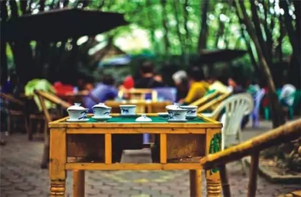
这里的文化可以用八个字概括，“进退自如，浮沉自安”。
这座古老而又神秘的都城，它承载着三千余年的历史，从未更改城名也不曾迁移城址，平静而祥和地屹立于“天府之国”的腹地。

也许等到你要离开的时候，才会发现成都旅游宣传语——“一座来了就不想离开的城市”绝不是自恋的夸耀。
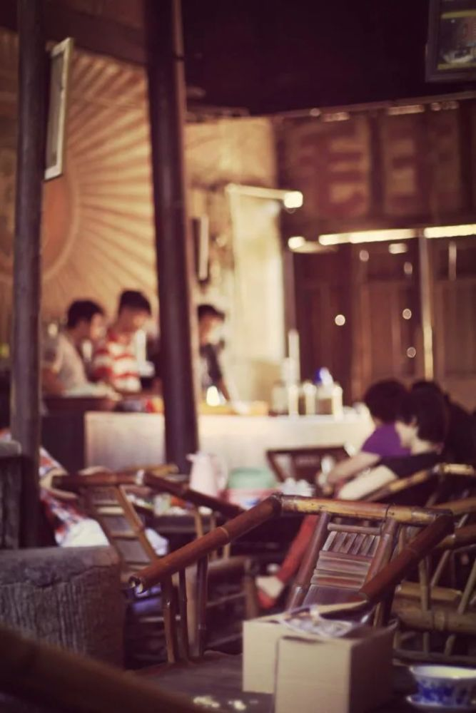
路线概览
D1观音阁老茶铺—泡桐树街—春熙路—成都远洋太古里
D2天府熊猫塔—宽窄巷子景区—九眼桥—兰桂坊成都
D3成都大熊猫繁育研究基地
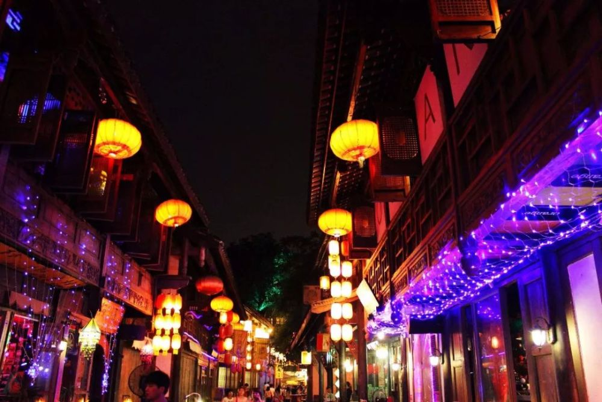
到了成都，第一个推荐去的地方便是老茶馆，茶是慢节奏生活最好的体现之一。
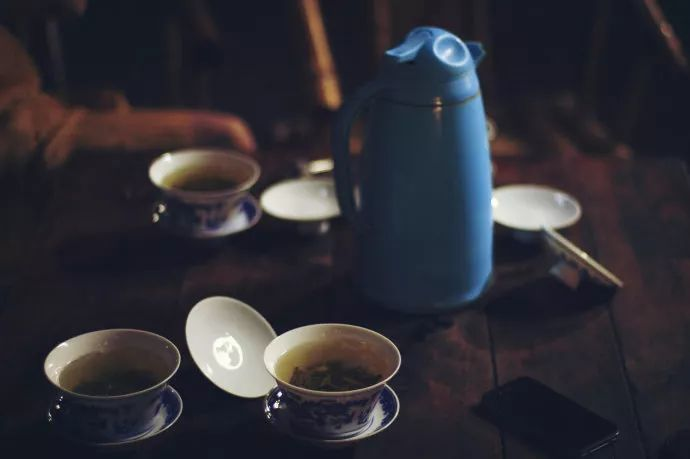
观音阁老茶馆座落在双流彭镇，很清净的一条老街，走到底，最热闹的那处就是观音阁老茶馆，至今仍保持四川老茶馆的风貌和传统。
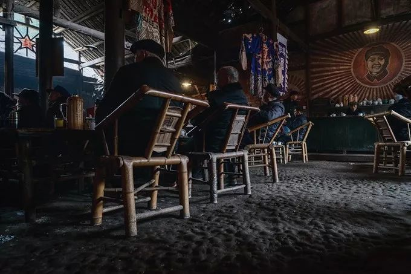
茶馆青瓦盖顶，木质穿斗的砖泥墙体。到处斑驳的墙壁，满墙的革命语录加上老式的桌椅，瞬间让你觉得时间依然停在那个火热的年代。
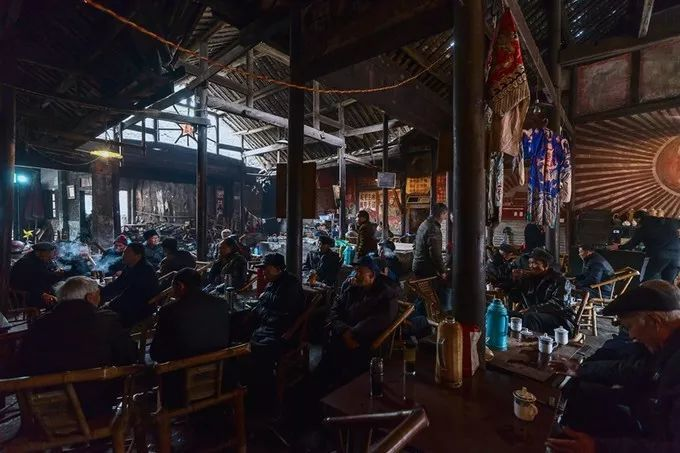
茶馆用的还是蜂窝煤炉子，十几个茶壶轮流烧水，热气腾腾的烟火气，想起小时候热闹的三世同堂的老屋。
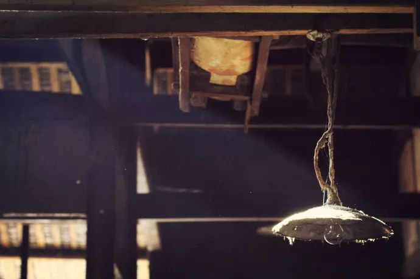
在老茶馆里，随处可见的老物件，每个角落都显示着老茶馆的原汁原味，竹椅子，木桌子，温水瓶，时间在这里静止了。
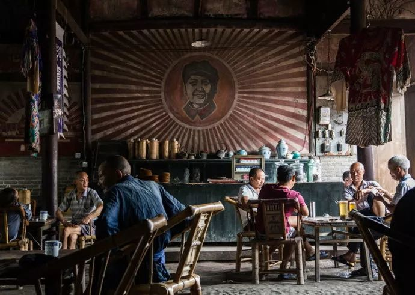
在彭镇吃完午饭之后回市区，到泡桐树街感受一下成都现代慢生活是什么样子。
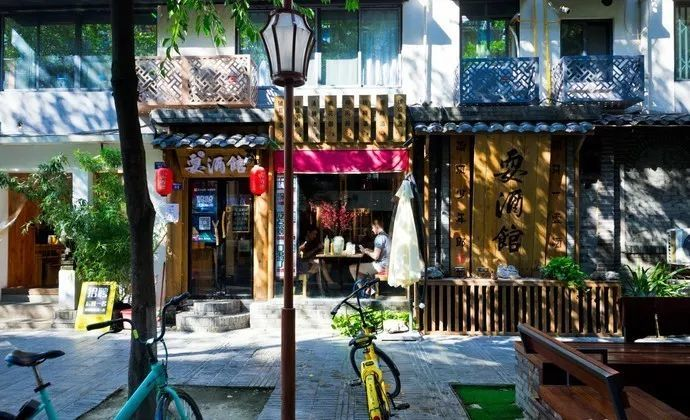
这儿是很文艺的一条小巷，可以跟老茶馆形成很强的反差感~
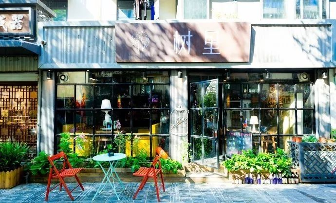
另外，这里有一家即是网红店又是实力店的爱妻牛排火锅，推荐去试试哦~（地址：十二南街2号附2号）
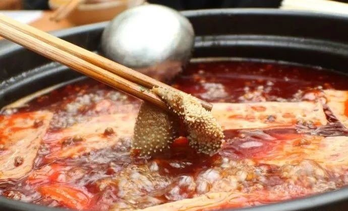
之后可以来到购物天堂春熙路，除去购物，这里聚集了成都的几大老字号美食店，可以一口气吃遍成都小吃。
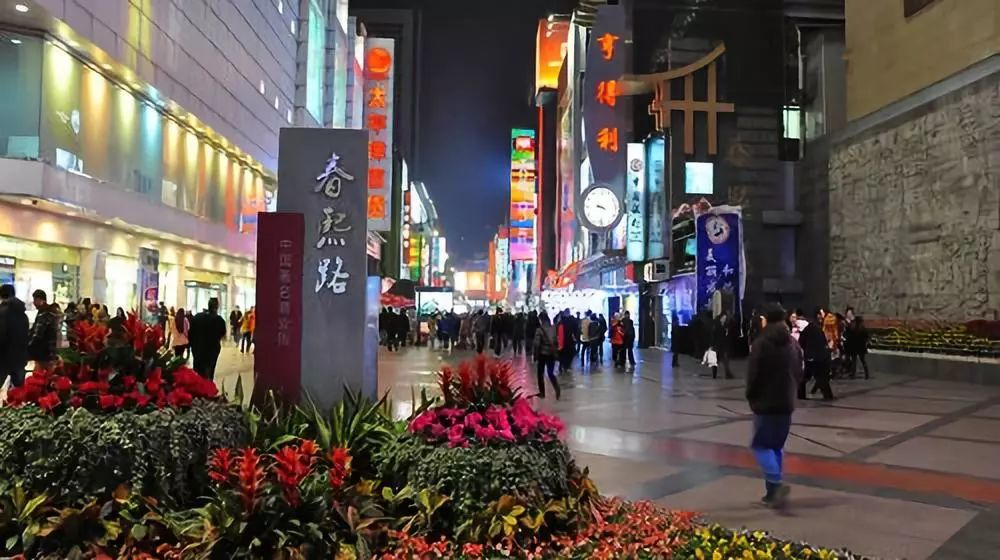
看看四川美女，记得打卡爬楼的大熊猫~
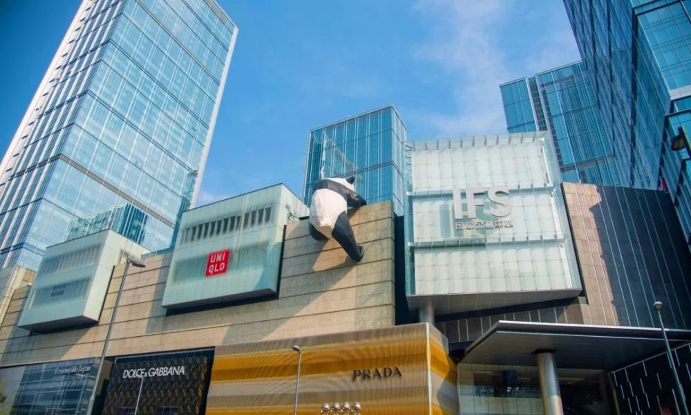
太古里就位于春熙路附近，建议最好是傍晚或者晚上来，那时候的太古里最有活力，也比较接地气。
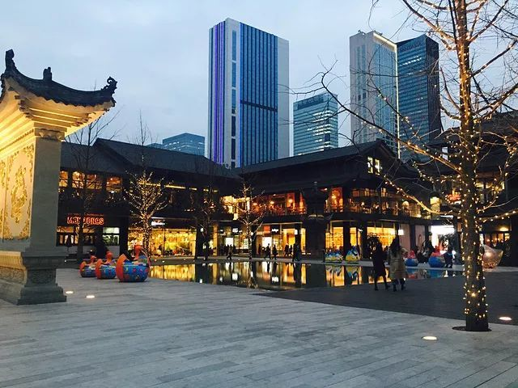
整个街区都是两层楼的低矮建筑，毗邻大慈寺，这些建筑都刻意保持了复古风格。
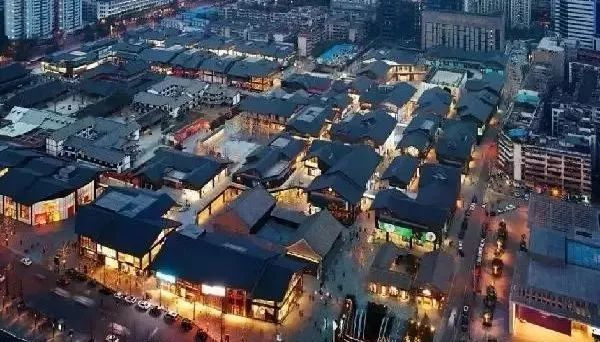
夜幕湛蓝，华灯初上，川流不息的人群和典雅玲珑的古风建筑完美的结合在了一起。
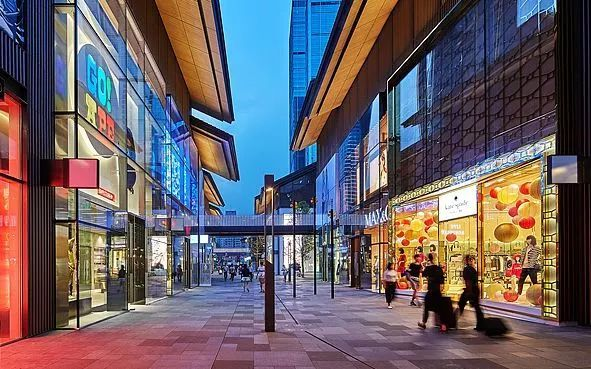
第二天睡到自然醒，上午先到天府熊猫塔玩，从高空俯瞰下成都这个现代化都市。
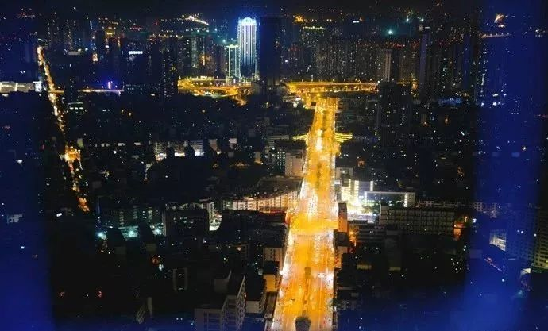
站在透空玻璃上，俯瞰城市，凌空观景，还是有点刺激的。据说，在这218米的透空玻璃上，是求婚最容易成功的地方，因此，这里还经常举办各种浪漫的求婚活动~
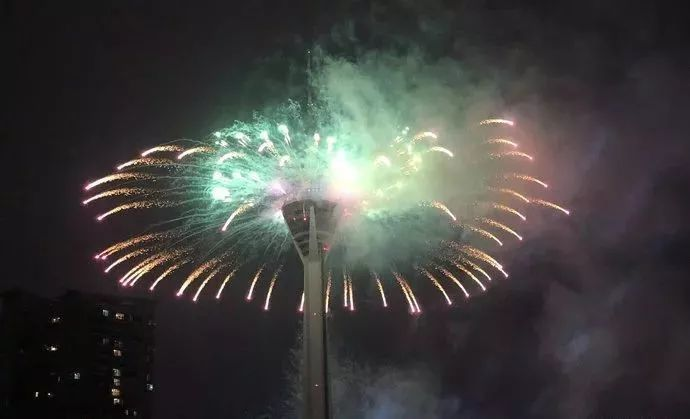
下午去宽窄巷子，每个城市都有一个最能代表它的地方，这条由宽巷子、井巷子、窄巷子组合成的清朝古街道，就是必体验的“最成都”景点之一。
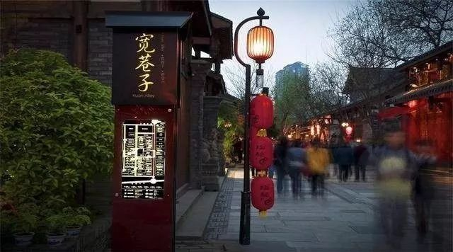
这里充满着市井欢乐，不自觉就放慢了脚步，悠闲自在起来，左瞧瞧，右瞧瞧，巴适的很。
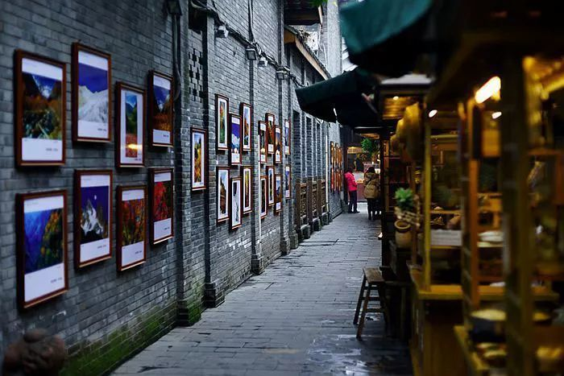
除了满街的高档餐馆、咖啡馆、酒吧、小吃摊和创意文化产品店，巷子里还有极具特色的茶铺、看变脸、挖耳朵、假铜人等，反正绝对能满足你对成都的想象。
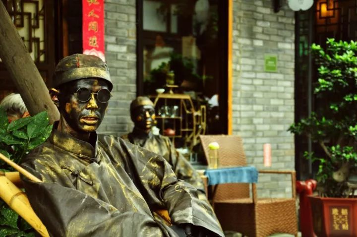
在宽窄巷子度过一个热闹的下午，晚上则推荐去一个成都夜生活比较有代表性的地方之一——九眼桥。
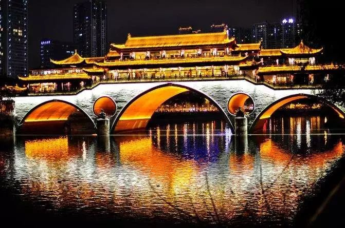
夜幕下的九眼桥，与两边酒吧的灯光，构成的夜景真心点赞。可以选择一家自己喜欢且酒水价格合适的小店，边喝美酒，边欣赏河边的风景。
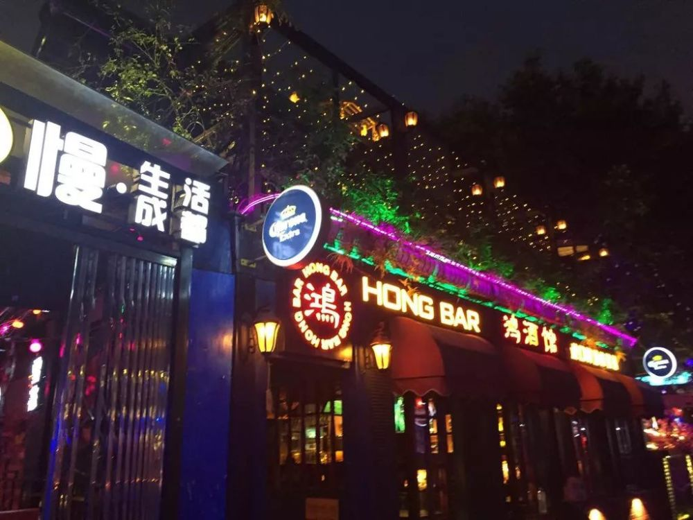
晚上如果还不想回酒店休息，可以选择去寻欢焖烤羊肉串旁边的酒吧小坐，很多人都喜欢的一家店应该就是寻欢焖烤羊肉串了

除此之外，也可以去附近的兰桂坊，体验一下成都热闹的夜生活。
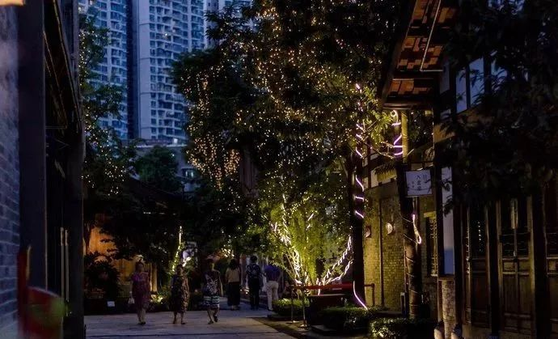
第三天，当然要去到成都大熊猫繁育研究基地，超级可爱的国宝大熊猫，一定要亲眼看一下它们的萌态~

基地挺大的，想多看熊猫得拿出一整天时间。从熊猫幼崽到成年大熊猫，这里的滚滚可是非常多的呦。
成都有着让人爱的一切元素，美食、美景、美女，特别是城市里的每个角落，都将悠闲、乐观、宁静、繁华又洒脱的独有特质，渲染得淋漓尽致。
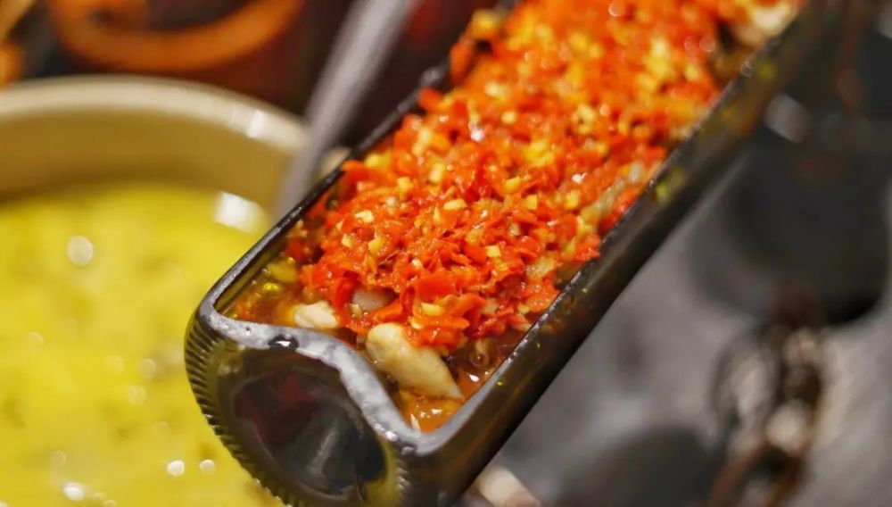